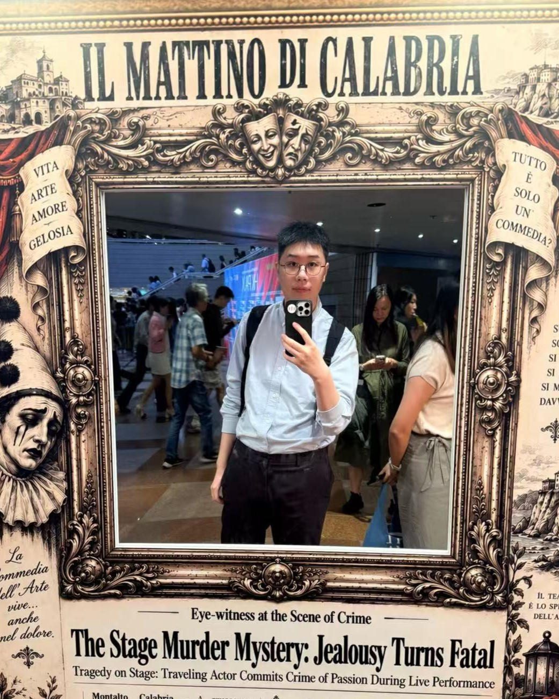
Shuren Qi 祁树仁
Postdoctoral Fellow
Frontier of Artificial Networks (FAN) Group
Department of Data Science; College of Computing
I am currently a Postdoctoral Fellow at the Department of Data Science, City University of Hong Kong (CityU). Prior to this, I was a Postdoctoral Fellow at The Chinese University of Hong Kong (CUHK). I obtained my Ph.D. from Nanjing University of Aeronautics and Astronautics (NUAA).
My research focuses on principled and scalable modeling of inductive bias for data representation. In particular, I study how invariance, symmetry, and hierarchy serve as inductive biases for learning in the 2020s and beyond, and develop frameworks that are theoretically grounded, structurally transparent, and compatible with scaling. My research has been published in top-tier journals and conferences, such as ACM Computing Surveys, IEEE TPAMI, IEEE TIP, ICCV, and USENIX Security.
Research Interests
- Invariance & Symmetry
- Representation Theory
- Geometric Deep Learning
- World Models
- AI for Science
- Trustworthy AI
News
Recent UpdatesSelected Publications
Full list on Google Scholar →Representations
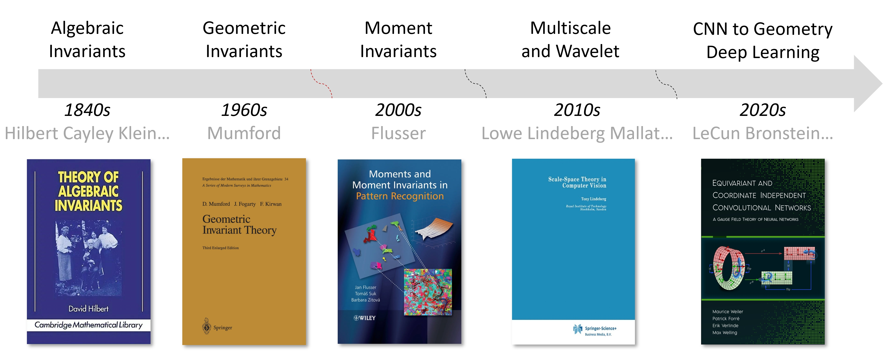
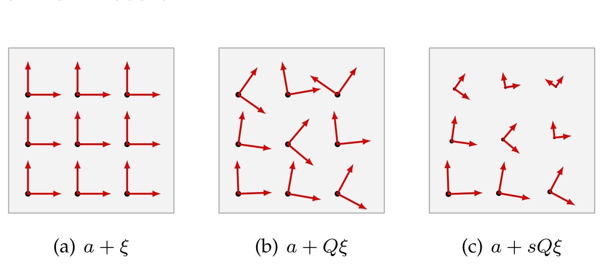
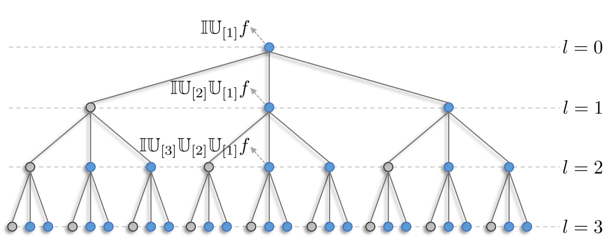
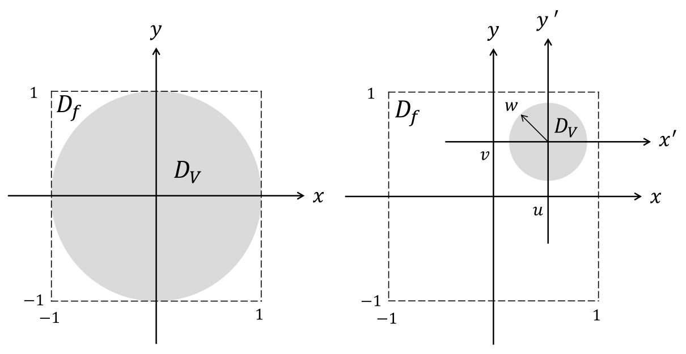
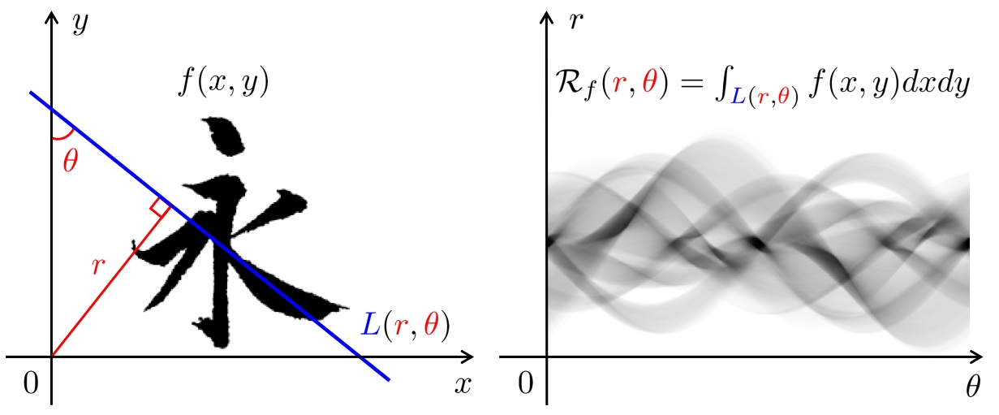
Applications
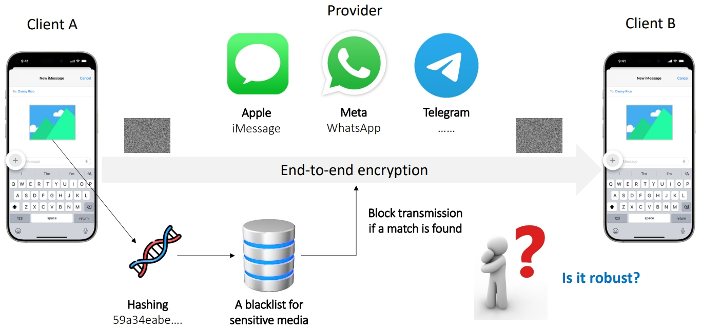
Atkscopes: Multiresolution Adversarial Perturbation as a Unified Attack on Perceptual Hashing and Beyond
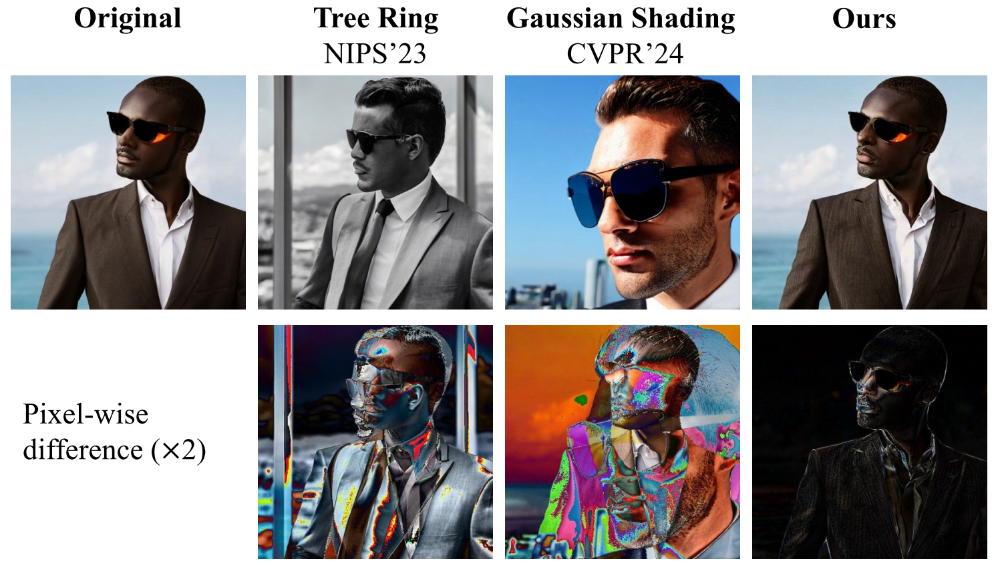
Robust Yet Imperceptible Diffusion Watermarking for AI-Generated Image Verification
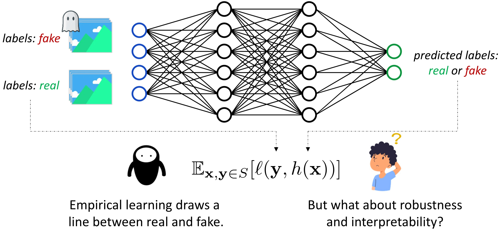
Boosting Geometric Invariants for Discriminative Forensics of Large-Scale Generated Visual Content
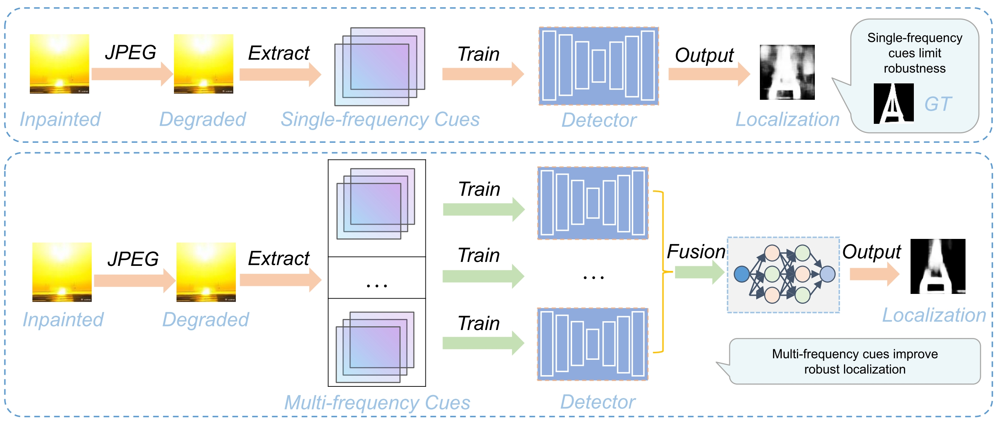
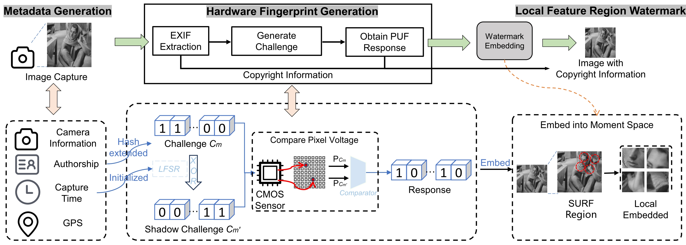
Hard EXIF: Protecting Image Authorship Through Metadata, Hardware, and Content
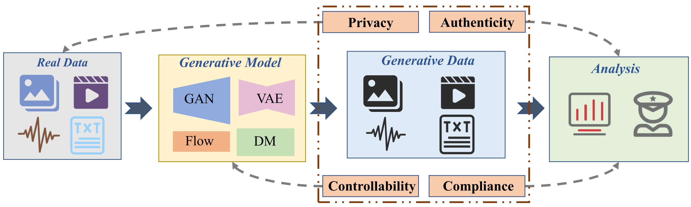